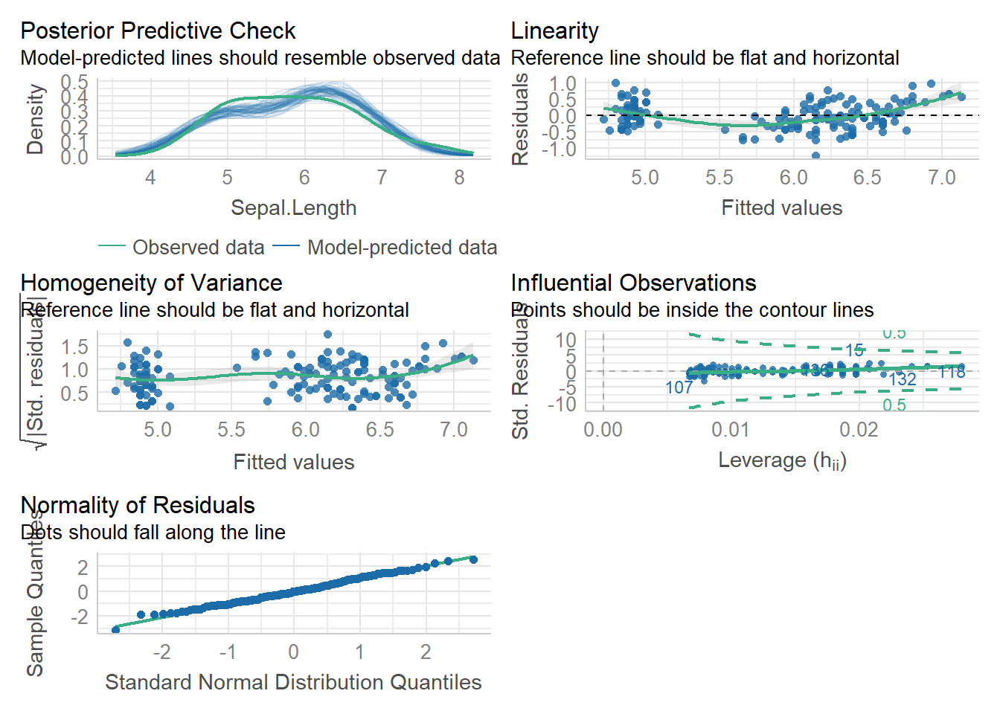

library(tidyverse)
library(see)
library(car)
library(patchwork)
library(ggsci)
library(ggridges)
library(performance)
library(Hmisc) #for correlation matrix
library(corrplot)#to visualize correlation matrices
library(car) #contains some statistical tests we need to assess assumptionsLab_5_correlation_regression_t_chi
Learning Objectives
1.) Explore correlations between numerical variables (two variables and many)
2.) Practice running and interpreting linear regressions
3.) Calculate and interpret R^2 values
4.) Test assumptions of linear regression
5.) practice running and interpreting t-tests
6.) test assumptions of t-tests
7.) Practice chi-square tests and understand their application
1: Load packages
2: Correlation between numerical variables
A correlation coefficient (r) tells us the relationship (strength and direction) between two variables. These coefficients can be positive or negative and will range from 0 to 1 (or negative 1). Values nearer to 1 (or negative 1) indicate stronger correlations and values closer to 0 indicate weaker correlations
Let’s try out some correlations using the iris data.
Is there a correlation between sepal length and sepal width? Let’s test each species separately for now.
Step 1: make a scatterplot
#filter down to a single species
virg<-iris %>%
filter(Species=='virginica')
#make a plot
ggplot(virg, aes(x=Sepal.Length, y=Sepal.Width))+
geom_point()+
theme_classic()
Step 2: Calculate a correlation coeficient (r)
cor(virg$Sepal.Length, virg$Sepal.Width)[1] 0.4572278This value (r=0.45) positive and middle of the road/strong. This tells us that some correlation likely exists.
Step 3: Do a hypothesis test on the correlation Spearman’s Test
H0: The correlation between these two variables is 0
Ha: The correlation != 0
cor.test(virg$Sepal.Length, virg$Sepal.Width, method="spearman")Warning in cor.test.default(virg$Sepal.Length, virg$Sepal.Width, method =
"spearman"): Cannot compute exact p-value with ties
Spearman's rank correlation rho
data: virg$Sepal.Length and virg$Sepal.Width
S = 11943, p-value = 0.002011
alternative hypothesis: true rho is not equal to 0
sample estimates:
rho
0.4265165 The above output gives us the r value (cor=0.457) AND a p-value for a hypothesis test that the two correlations do not differ. If p<0.05 we can reject our H0 and say that the correlation differs from 0. Here, p=0.0008 so we can reject H0 and suggest that we have a significant positive correlation! Rho is similar to r and is this case our correlation coefficient (0.42). It is slightly lower than the r we calculated above.
iris2<-iris[,c(1:4)] #filter iris so we only have the numerical columns!
iris_cor<-cor(iris2, method="spearman")
iris_cor Sepal.Length Sepal.Width Petal.Length Petal.Width
Sepal.Length 1.0000000 -0.1667777 0.8818981 0.8342888
Sepal.Width -0.1667777 1.0000000 -0.3096351 -0.2890317
Petal.Length 0.8818981 -0.3096351 1.0000000 0.9376668
Petal.Width 0.8342888 -0.2890317 0.9376668 1.0000000The above correlation matrix shows r (correlation coefficient) not p values!
Getting r and p values
mydata.rcorr = rcorr(as.matrix(iris2))
mydata.rcorr #top matrix = r, bottom matrix = p Sepal.Length Sepal.Width Petal.Length Petal.Width
Sepal.Length 1.00 -0.12 0.87 0.82
Sepal.Width -0.12 1.00 -0.43 -0.37
Petal.Length 0.87 -0.43 1.00 0.96
Petal.Width 0.82 -0.37 0.96 1.00
n= 150
P
Sepal.Length Sepal.Width Petal.Length Petal.Width
Sepal.Length 0.1519 0.0000 0.0000
Sepal.Width 0.1519 0.0000 0.0000
Petal.Length 0.0000 0.0000 0.0000
Petal.Width 0.0000 0.0000 0.0000 Plotting our correlations
corrplot(iris_cor)
A Chi-square test is a statistical test used to determine if two categorical variables have a significant correlation between them. These two variables should be selected from the same population. An example - Is the color of a thing red or green? Is the answer to a simple question yes or no?
Data format Technically, a chi-square test is done on data that are in a contingency table (contains columns (variables) in which numbers represent counts. For example, here is a contingency table of household chore data (exciting)
chore <- read.delim("http://www.sthda.com/sthda/RDoc/data/housetasks.txt", row.names=1)
chore Wife Alternating Husband Jointly
Laundry 156 14 2 4
Main_meal 124 20 5 4
Dinner 77 11 7 13
Breakfeast 82 36 15 7
Tidying 53 11 1 57
Dishes 32 24 4 53
Shopping 33 23 9 55
Official 12 46 23 15
Driving 10 51 75 3
Finances 13 13 21 66
Insurance 8 1 53 77
Repairs 0 3 160 2
Holidays 0 1 6 153H0 = The row and column data of the contingency table are independent (no relationship) Ha= Row and column variables are dependent (there is a relationship between them)
The test
chorechi<-chisq.test(chore)
chorechi
Pearson's Chi-squared test
data: chore
X-squared = 1944.5, df = 36, p-value < 2.2e-16This result demonstrates that there is a significant association between the columns and rows in the data (they are dependent).
A second example
Let’s try to assess correlation between two categorical variables in a dataframe we know! We will use mtcars
head(mtcars) mpg cyl disp hp drat wt qsec vs am gear carb
Mazda RX4 21.0 6 160 110 3.90 2.620 16.46 0 1 4 4
Mazda RX4 Wag 21.0 6 160 110 3.90 2.875 17.02 0 1 4 4
Datsun 710 22.8 4 108 93 3.85 2.320 18.61 1 1 4 1
Hornet 4 Drive 21.4 6 258 110 3.08 3.215 19.44 1 0 3 1
Hornet Sportabout 18.7 8 360 175 3.15 3.440 17.02 0 0 3 2
Valiant 18.1 6 225 105 2.76 3.460 20.22 1 0 3 1#make a contingency table
cartab<-table(mtcars$carb, mtcars$cyl)
chisq.test(cartab)Warning in chisq.test(cartab): Chi-squared approximation may be incorrect
Pearson's Chi-squared test
data: cartab
X-squared = 24.389, df = 10, p-value = 0.006632#note that we don't NEED to make the table. We can just do this
chisq.test(mtcars$carb, mtcars$cyl)Warning in chisq.test(mtcars$carb, mtcars$cyl): Chi-squared approximation may
be incorrect
Pearson's Chi-squared test
data: mtcars$carb and mtcars$cyl
X-squared = 24.389, df = 10, p-value = 0.006632Both tests above are the same (just two options for you). We see that p<0.05, thus we have evidence to reject H0 and suggest that carb and cyl are dependent / correlated.
3. (Simple) Linear Regression
It is very easy to make a regression line in ggplot. We can plot our scatterplot as we normally would and then we add the regression line using the geom_smooth() argument.
ggplot(iris, aes(x=Petal.Length, y=Sepal.Length))+
geom_point()+
geom_smooth(method='lm')+
theme_classic()`geom_smooth()` using formula = 'y ~ x'
The blue line represents our regression line (y~x). The gray around the line is the SE. We can add SE=FALSE to our geom_smooth() to turn that off:
geom_smooth(method=‘lm’, SE=FALSE)
Linear regressions have 4 assumptions:
1.) Linearity of the data: We assume the relationship between predictor (x) and outcome/dependent variable (y) is approx. linear. At each value of X there is a population of possible Y-values whose mean lies on the regression line.
2.) Normality of residuals: The residual error are assumed to be normally distributed. In other words: at each value of X, the distribution of possible Y values is normal
3.) Homogeneity of residual variance (homoscedasticity): We assume residual variance is approx. constant. In other words: the variance of Y values is the same at all values of X
4.) Independence of residual error terms: At each value of X, the Y-measurements represent a random sample from the population of possible Y values.
We can also make a residual plot to check some of our assumptions. Residuals measure the scatter of points above or below the least-squares regression line. When we calculate the residuals for a linear regression and plot them, y=0 is the least squares line. Residuals essentially represent the distance between each point and the linear regression line we see in our regression graph.
residuals(lm1) 1 2 3 4 5 6
0.22090540 0.02090540 -0.13820238 -0.31998683 0.12090540 0.39822871
7 8 9 10 11 12
-0.27909460 0.08001317 -0.47909460 -0.01998683 0.48001317 -0.16087906
13 14 15 16 17 18
-0.07909460 -0.45641792 1.00268985 0.78001317 0.56179762 0.22090540
19 20 21 22 23 24
0.69822871 0.18001317 0.39822871 0.18001317 -0.11552569 0.09822871
25 26 27 28 29 30
-0.28355574 0.03912094 0.03912094 0.28001317 0.32090540 -0.26087906
31 32 33 34 35 36
-0.16087906 0.48001317 0.28001317 0.62090540 -0.01998683 0.20268985
37 38 39 40 41 42
0.66179762 0.02090540 -0.43820238 0.18001317 0.16179762 -0.33820238
43 44 45 46 47 48
-0.43820238 0.03912094 0.01644426 -0.07909460 0.13912094 -0.27909460
49 50 51 52 53 54
0.38001317 0.12090540 0.77146188 0.25324634 0.58967743 -0.44229252
55 56 57 58 59 60
0.31235411 -0.44675366 0.07146188 -0.75604693 0.41235411 -0.70140030
61 62 63 64 65 66
-0.73783139 -0.12407698 0.05770748 -0.12853812 -0.17872361 0.59413856
67 68 69 70 71 72
-0.54675366 -0.18318475 0.05324634 -0.30140030 -0.36943035 0.15770748
73 74 75 76 77 78
-0.01032257 -0.12853812 0.33503079 0.49413856 0.53056965 0.34878520
79 80 81 82 83 84
-0.14675366 -0.03783139 -0.36050807 -0.31961584 -0.10140030 -0.39210703
85 86 87 88 89 90
-0.74675366 -0.14675366 0.47146188 0.19413856 -0.38318475 -0.44229252
91 92 93 94 95 96
-0.60586144 -0.08764589 -0.14229252 -0.65604693 -0.42407698 -0.32407698
97 98 99 100 101 102
-0.32407698 0.13503079 -0.43337025 -0.28318475 -0.46013708 -0.59210703
103 104 105 106 107 108
0.38075515 -0.29656817 -0.17835262 0.59450955 -1.24675366 0.41718624
109 110 111 112 113 114
0.02164738 0.39897069 0.10789297 -0.07389149 0.24432406 -0.65121480
115 116 117 118 119 120
-0.59210703 -0.07389149 -0.05567594 0.65361733 0.57183287 -0.35121480
121 122 123 124 125 126
0.26253960 -0.71032257 0.65361733 -0.01032257 0.06253960 0.43986292
127 128 129 130 131 132
-0.06943035 -0.21032257 -0.19656817 0.52164738 0.59897069 0.97629401
133 134 135 136 137 138
-0.19656817 -0.09210703 -0.49656817 0.89897069 -0.29656817 -0.15567594
139 140 141 142 143 144
-0.26943035 0.38521629 0.10343183 0.50789297 -0.59210703 0.08075515
145 146 147 148 149 150
0.06253960 0.26700074 -0.05121480 0.06700074 -0.31478371 -0.49210703 ggplot(lm1, aes(x=.fitted, y=.resid))+
geom_point()+
geom_hline(yintercept=0, linetype='dashed')+
labs(x='Petal Legnth', y='Residuals')+
theme_classic()
If assumptions of normality and equal variance are met, a residual plot should have: - A roughly symmetric cloud of points above and below the horizontal line at 0 with a higher density of points close to the line ran away from it.
- Little noticeable curvature as we move from left to right
- Approx. equal variance of points above and below the line at all values of X
The residual plot above shows meets all assumptions, though this analysis is somewhat subjective.
An alternative assumption check I think it is easier to do a more comprehensive visual check with the performance package in R. We can easily visually check the first 3 assumptions using check_model(). Assumption 4 requires us to think about experimental design.
lm1<-lm(Sepal.Length ~ Petal.Length, data=iris)
check_model(lm1)Not enough model terms in the conditional part of the model to check for
multicollinearity.
Using the plots above, we can check 3 / 4 of our assumptions and look for influential observations/outliers. The plots even tell us what to look for on them! This is a bit simpler than trying to analyze the residual plot.
As with the residual plot, this analysis of assumptions is somewhat subjective. That is ok.
Sometimes the relationship between two variables is not linear! There are many types of common relationships including logarithmic and exponential. We can often visualize these relationships and Transform our data to make them linear with some simple math.
Let’s look at an example:
head(Loblolly)Grouped Data: height ~ age | Seed
height age Seed
1 4.51 3 301
15 10.89 5 301
29 28.72 10 301
43 41.74 15 301
57 52.70 20 301
71 60.92 25 301p1<-ggplot(Loblolly, aes(x=age, y=height))+
geom_point()+
geom_smooth()+
geom_smooth(method='lm', linetype='dashed', color='firebrick')+
theme_classic()+
labs(title='original')
#this is roughly logarithmic in shape
lob<-Loblolly
lob$age2<-log(lob$age)
p2<-ggplot(lob, aes(x=age2, y=height))+
geom_point()+
geom_smooth()+
geom_smooth(method='lm', linetype='dashed', color='firebrick')+
theme_classic()+
labs(title='log transformed')
lob$age3=(lob$age2)^2
p3<-ggplot(lob, aes(x=age3, y=height))+
geom_point()+
geom_smooth()+
geom_smooth(method='lm', linetype='dashed', color='firebrick')+
theme_classic()+
labs(title='squared')
p1/p2/p3`geom_smooth()` using method = 'loess' and formula = 'y ~ x'
`geom_smooth()` using formula = 'y ~ x'
`geom_smooth()` using method = 'loess' and formula = 'y ~ x'
`geom_smooth()` using formula = 'y ~ x'
`geom_smooth()` using method = 'loess' and formula = 'y ~ x'
`geom_smooth()` using formula = 'y ~ x'Here we can see that the transformation was fairly trivial (the data were close enough to a straight line already). BUT, technically, the first plot shows a logarithmic trend. We can transform one of the variables to generate a more linear trend. We can guess a transformation and check it with graphs or we can use our knowledge of mathematical relationships to understand how we might make our relationship more linear.
We can look at mtcars this time…
head(mtcars) mpg cyl disp hp drat wt qsec vs am gear carb
Mazda RX4 21.0 6 160 110 3.90 2.620 16.46 0 1 4 4
Mazda RX4 Wag 21.0 6 160 110 3.90 2.875 17.02 0 1 4 4
Datsun 710 22.8 4 108 93 3.85 2.320 18.61 1 1 4 1
Hornet 4 Drive 21.4 6 258 110 3.08 3.215 19.44 1 0 3 1
Hornet Sportabout 18.7 8 360 175 3.15 3.440 17.02 0 0 3 2
Valiant 18.1 6 225 105 2.76 3.460 20.22 1 0 3 1Now, I want to hypothesize that there will be no effect of cylinder on horsepower (this is called a “null hypothesis”). We’ve seen similar hypothesis before in our ANOVA.
First, let’s make cylinder a factor and plot a boxplot so we can see whether there may be a trend here…
mtcars$cyl1=as.factor(mtcars$cyl)
ggplot(mtcars, aes(x=cyl1, y=hp))+
geom_boxplot()+
theme_bw()
I think it is safe to say we see what we might suspect to be a linear(ish) relationship between cyl and hp, where hp increases as cyl increases. What do you think?
Now, let’s do some stats on this.
lmhp<-lm(hp~cyl1, data = mtcars)
summary(lmhp)
Call:
lm(formula = hp ~ cyl1, data = mtcars)
Residuals:
Min 1Q Median 3Q Max
-59.21 -22.78 -8.25 15.97 125.79
Coefficients:
Estimate Std. Error t value Pr(>|t|)
(Intercept) 82.64 11.43 7.228 5.86e-08 ***
cyl16 39.65 18.33 2.163 0.0389 *
cyl18 126.58 15.28 8.285 3.92e-09 ***
---
Signif. codes: 0 '***' 0.001 '**' 0.01 '*' 0.05 '.' 0.1 ' ' 1
Residual standard error: 37.92 on 29 degrees of freedom
Multiple R-squared: 0.7139, Adjusted R-squared: 0.6941
F-statistic: 36.18 on 2 and 29 DF, p-value: 1.319e-08This time we used a categorical x variable, which makes things a little more interesting. In the coefficients table this time we see cyl = 6 and cyl =8 represented as well as “intercept.” R takes the categorical variables and places them in alpha numeric order in these tables. So “intercept” is actually cyl=4. The “estimate” tells us the effect size of each category relative to “intercept.” SO, the mean of cyl=4 should be 82.64 (check the boxplot above to confirm). The mean of cyl=6 is not 39.65, but is actually 39.65 higher than mean of cyl=4 (82.64 + 39.65 = 132.29, which checks out). The p-values associated with each of the coefficients test the null hypothesis that each coefficient has no effect. A p <0.05 indicates that the coefficient is likely to be meaningful in the model (changes in the predictor’s value are related to changes in the response value).
Further down, we see an R-squared of nearly 0.70, which is very good evidence of a linear relationship (70% of the variance in y can be explained by x!). The p-value is very nearly 0.00, which indicates a significant linear correlation.
check_model(lmhp)Not enough model terms in the conditional part of the model to check for
multicollinearity.
Here we see some concern about Homoscedasticity and homogeneity of variance. We can probably still assume our model is reliable, but we may want to be careful. We learned ways to numerically assess this last week, but again, with high enough sample size, this won’t be an issue. Here, I would suggest that n is too small, so if this were a real statistical test we would have limitations to discuss.
Remember our hypothesis (null) was: “There will be no effect of cylinder on horsepower.” We are able to reject this null hypothesis and suggest that indeed horsepower increases as cylinder increases. We might also add caveats that homoscedasticity was not confirmed due to low sample size, but the result seems clear enough that this likely doesn’t matter.
4. t-test
Additional Tutorials and Resources for t-tests
Statistics is a complex field with a long history. We could spend an entire course or even an entire career focusing on the intricate details of statistical decisions and ideas. We’ve already spent some time on this! I want you to have the statistical grounding necessary to plan your experiments and analyze your data. For biologists, statistics are a tool we can leverage to perform the best possible experiments and test our hypotheses. The T-test is the start of our stats journey. It’s a simple test and one that you may not use often, but the theory behind it sets the stage for what is to come!
The t-test (or students’ t-test) is a basic statistical test used to assess whether or not the means of two groups are different from one another. In this test, the null hypothesis is that the two means are equal (or that there is no difference between the two means).
A t-test should only be used if the following assumptions are met:
1.) the two distributions whose means we are comparing must be normally distributed
2.) The variances of the two groups must be equal
Generate example data
iris2<-iris %>%
filter(Species != 'setosa') %>%
droplevels() #removes the empty levels so when we check levels below we only get the ones that are still in the data!
#check levels to make sure we only have 2 species!
head(iris2) Sepal.Length Sepal.Width Petal.Length Petal.Width Species
1 7.0 3.2 4.7 1.4 versicolor
2 6.4 3.2 4.5 1.5 versicolor
3 6.9 3.1 4.9 1.5 versicolor
4 5.5 2.3 4.0 1.3 versicolor
5 6.5 2.8 4.6 1.5 versicolor
6 5.7 2.8 4.5 1.3 versicolorlevels(iris2$Species)[1] "versicolor" "virginica" We will use these data for our examples today. T-test requires only 2 groups/populations. We will assess the alternative hypothesis that one of our numerical variables (sepal length, sepal width, petal length, or petal width) differs by species.
But first, we must test our assumptions
Method 1: the Shapiro-Wilk Test If p < 0.05 then the distribution is significantly different from normal.
Step 1: we need to create separate data frames for each species to assess normality of each variable by species!
versi<-iris2 %>%
filter(Species=='versicolor') %>%
droplevels()
virg<-iris2 %>%
filter(Species=='virginica') %>%
droplevels()
Step 2: We can run our shapiro-wilk tests on each variable if we’d like
shapiro.test(versi$Petal.Length) #this is normally distributed
Shapiro-Wilk normality test
data: versi$Petal.Length
W = 0.966, p-value = 0.1585shapiro.test(versi$Petal.Width) # this is not
Shapiro-Wilk normality test
data: versi$Petal.Width
W = 0.94763, p-value = 0.02728shapiro.test(versi$Sepal.Length) #normal
Shapiro-Wilk normality test
data: versi$Sepal.Length
W = 0.97784, p-value = 0.4647shapiro.test(versi$Sepal.Width) #normal
Shapiro-Wilk normality test
data: versi$Sepal.Width
W = 0.97413, p-value = 0.338shapiro.test(virg$Petal.Length) #normal
Shapiro-Wilk normality test
data: virg$Petal.Length
W = 0.96219, p-value = 0.1098shapiro.test(virg$Petal.Width) #normal
Shapiro-Wilk normality test
data: virg$Petal.Width
W = 0.95977, p-value = 0.08695shapiro.test(virg$Sepal.Length) #normal
Shapiro-Wilk normality test
data: virg$Sepal.Length
W = 0.97118, p-value = 0.2583shapiro.test(virg$Sepal.Width) #normal
Shapiro-Wilk normality test
data: virg$Sepal.Width
W = 0.96739, p-value = 0.1809
Method 2: Visualization
Explore the following visualizations. Do you see clear evidence of normality?
a1<-ggplot(data=iris2, aes(Petal.Length, fill=Species))+
geom_histogram(binwidth = 0.3)+
facet_wrap(~Species)+
theme_classic()+
scale_fill_aaas()
a2<-ggplot(data=iris2, aes(x=Petal.Length, y=Species, fill=Species))+
geom_density_ridges()+ #makes a smooth density curve instead of a histogram!
theme_classic()+
scale_fill_aaas()
a1/a2 #compare the visualizations (they are of the same data)- do we see normality here?Picking joint bandwidth of 0.206b1<-ggplot(data=iris2, aes(Petal.Width, fill=Species))+
geom_histogram(binwidth = 0.3)+
facet_wrap(~Species)+
theme_classic()+
scale_fill_aaas()
b2<-ggplot(data=iris2, aes(x=Petal.Width, y=Species, fill=Species))+
geom_density_ridges()+ #makes a smooth density curve instead of a histogram!
theme_classic()+
scale_fill_aaas()
b1/b2 #compare the visualizations (they are of the same data)- do we see normality here?Picking joint bandwidth of 0.0972c1<-ggplot(data=iris2, aes(Sepal.Width, fill=Species))+
geom_histogram(binwidth = 0.3)+
facet_wrap(~Species)+
theme_classic()+
scale_fill_aaas()
c2<-ggplot(data=iris2, aes(x=Sepal.Width, y=Species, fill=Species))+
geom_density_ridges()+ #makes a smooth density curve instead of a histogram!
theme_classic()+
scale_fill_aaas()
c1/c2 #compare the visualizations (they are of the same data)- do we see normality here?Picking joint bandwidth of 0.122d1<-ggplot(data=iris2, aes(Sepal.Length, fill=Species))+
geom_histogram(binwidth = 0.3)+
facet_wrap(~Species)+
theme_classic()+
scale_fill_aaas()
d2<-ggplot(data=iris2, aes(x=Sepal.Length, y=Species, fill=Species))+
geom_density_ridges()+ #makes a smooth density curve instead of a histogram!
theme_classic()+
scale_fill_aaas()
d1/d2 #compare the visualizations (they are of the same data)- do we see normality here?Picking joint bandwidth of 0.21AKA homogeneity of variance
Methods 1: F-test We will use the F-Test to compare the variance of two populations. This can only be used with 2 populations and is thus only useful when we run a t-test.
H0 for an F-test is: The variances of the two groups are equal.
Ha: The variances are different
p<0.05 allows us to reject the null (H0) and suggests that the variances are different
note: The F-test assumes our data are already normal! You should not run it on non-normal data
#we use var.test to run an F-test
f1<- var.test(Petal.Length ~ Species, data=iris2)
f1 # p>0.05, so we fail to reject H0 (the variances are likely equal)
F test to compare two variances
data: Petal.Length by Species
F = 0.72497, num df = 49, denom df = 49, p-value = 0.2637
alternative hypothesis: true ratio of variances is not equal to 1
95 percent confidence interval:
0.411402 1.277530
sample estimates:
ratio of variances
0.7249678 f2<- var.test(Petal.Width ~ Species, data=iris2)
f2 # p<0.05, so we reject H0 (variances are likely different)
F test to compare two variances
data: Petal.Width by Species
F = 0.51842, num df = 49, denom df = 49, p-value = 0.02335
alternative hypothesis: true ratio of variances is not equal to 1
95 percent confidence interval:
0.2941935 0.9135614
sample estimates:
ratio of variances
0.5184243 f3<- var.test(Sepal.Length ~ Species, data=iris2)
f3 # p>0.05, so we fail to reject H0 (the variances are likely equal)
F test to compare two variances
data: Sepal.Length by Species
F = 0.65893, num df = 49, denom df = 49, p-value = 0.1478
alternative hypothesis: true ratio of variances is not equal to 1
95 percent confidence interval:
0.3739257 1.1611546
sample estimates:
ratio of variances
0.6589276 f4<- var.test(Sepal.Width ~ Species, data=iris2)
f4 # p>0.05, so we fail to reject H0 (the variances are likely equal)
F test to compare two variances
data: Sepal.Width by Species
F = 0.94678, num df = 49, denom df = 49, p-value = 0.849
alternative hypothesis: true ratio of variances is not equal to 1
95 percent confidence interval:
0.5372773 1.6684117
sample estimates:
ratio of variances
0.9467839
Method 2: Levene Test
A more flexible test of homogeneity of variance is the Levene Test. It can be used to compare the variance of many populations (not just 2) and is more flexible than the F-test, so it can be used even if the normality assumption is violated.
this is the most commonly used test for homogeneity of variance
leveneTest() is in the car package in R!
N0: Variances of all populations are equal
p<0.05 allows us to reject H0
l1<- leveneTest(Petal.Length ~ Species, data=iris2)
l1 # p>0.05, so we fail to reject H0 (the variances are likely equal)Levene's Test for Homogeneity of Variance (center = median)
Df F value Pr(>F)
group 1 1.0674 0.3041
98 l2<- leveneTest(Petal.Width ~ Species, data=iris2)
l2 # p<0.05, so we reject H0 (variances are likely different)Levene's Test for Homogeneity of Variance (center = median)
Df F value Pr(>F)
group 1 6.5455 0.01205 *
98
---
Signif. codes: 0 '***' 0.001 '**' 0.01 '*' 0.05 '.' 0.1 ' ' 1l3<- leveneTest(Sepal.Length ~ Species, data=iris2)
l3 # p>0.05, so we fail to reject H0 (the variances are likely equal)Levene's Test for Homogeneity of Variance (center = median)
Df F value Pr(>F)
group 1 1.0245 0.3139
98 l4<- leveneTest(Sepal.Width ~ Species, data=iris2)
l4 # p>0.05, so we fail to reject H0 (the variances are likely equal)Levene's Test for Homogeneity of Variance (center = median)
Df F value Pr(>F)
group 1 0.0873 0.7683
98
Method 3: Visualization
Since p-values are more like guidelines, we also want to visualize our data to assess homogeneity of variance. We can do that in several ways. You might already have some ideas about this! In general, it seems smart to display the raw data as points and as boxplots. Let’s start there!
v1.1<-ggplot(data=iris2, aes(x=Species, y=Petal.Length, color=Species))+
geom_point()+
theme_classic()+
scale_color_aaas()
v1.2<-ggplot(data=iris2, aes(x=Species, y=Petal.Length, color=Species))+
geom_boxplot()+
theme_classic()+
scale_color_aaas()
v1.1+v1.2
v2.1<-ggplot(data=iris2, aes(x=Species, y=Petal.Width, color=Species))+
geom_point()+
theme_classic()+
scale_color_aaas()
v2.2<-ggplot(data=iris2, aes(x=Species, y=Petal.Width, color=Species))+
geom_boxplot()+
theme_classic()+
scale_color_aaas()
v2.1+v2.2
v3.1<-ggplot(data=iris2, aes(x=Species, y=Sepal.Width, color=Species))+
geom_point()+
theme_classic()+
scale_color_aaas()
v3.2<-ggplot(data=iris2, aes(x=Species, y=Sepal.Width, color=Species))+
geom_boxplot()+
theme_classic()+
scale_color_aaas()
v3.1+v3.2
v4.1<-ggplot(data=iris2, aes(x=Species, y=Sepal.Length, color=Species))+
geom_point()+
theme_classic()+
scale_color_aaas()
v4.2<-ggplot(data=iris2, aes(x=Species, y=Sepal.Length, color=Species))+
geom_boxplot()+
theme_classic()+
scale_color_aaas()
v4.1+v4.2We can if our sample sizes are large. If n is small, we should not ignore this assumption. There are alternatives to dealing with normality that we can discuss in the ANOVA section (such as transforming the data)
We can also ignore the equal variance requirement if we use the Welch t-test (default in R)
Finally, let’s do some T-tests!
H0: No difference between the means of the 2 populations p<0.05 allows us to reject this H0 (indicating a likely difference)
Step 1: Calculate means and error and plot!
meaniris<-iris2 %>%
group_by(Species) %>%
dplyr::summarise(meanpl=mean(Petal.Length), sdpl=sd(Petal.Length), n=n(), sepl=sdpl/sqrt(n), meanpw=mean(Petal.Width), sdpw=sd(Petal.Width), n=n(), sepw=sdpw/sqrt(n), meansl=mean(Sepal.Length), sdsl=sd(Sepal.Length), n=n(), sesl=sdpl/sqrt(n), meansw=mean(Sepal.Width), sdsw=sd(Sepal.Width), n=n(), sesw=sdsw/sqrt(n))
meaniris# A tibble: 2 × 14
Species meanpl sdpl n sepl meanpw sdpw sepw meansl sdsl sesl
<fct> <dbl> <dbl> <int> <dbl> <dbl> <dbl> <dbl> <dbl> <dbl> <dbl>
1 versicolor 4.26 0.470 50 0.0665 1.33 0.198 0.0280 5.94 0.516 0.0665
2 virginica 5.55 0.552 50 0.0780 2.03 0.275 0.0388 6.59 0.636 0.0780
# ℹ 3 more variables: meansw <dbl>, sdsw <dbl>, sesw <dbl>
p1<-ggplot(meaniris, aes(x=Species, y=meanpl, color=Species))+
geom_point()+
geom_errorbar(aes(x=Species, ymin=meanpl-sepl, ymax=meanpl+sepl), width=0.2)+
scale_color_aaas()+
theme_classic()+
labs(title='Petal Length')
p2<-ggplot(meaniris, aes(x=Species, y=meanpw, color=Species))+
geom_point()+
geom_errorbar(aes(x=Species, ymin=meanpw-sepw, ymax=meanpw+sepw), width=0.2)+
scale_color_aaas()+
theme_classic()+
labs(title='Petal Width')
p3<-ggplot(meaniris, aes(x=Species, y=meansl, color=Species))+
geom_point()+
geom_errorbar(aes(x=Species, ymin=meansl-sesl, ymax=meansl+sesl), width=0.2)+
scale_color_aaas()+
theme_classic()+
labs(title='Sepal Length')
p4<-ggplot(meaniris, aes(x=Species, y=meansw, color=Species))+
geom_point()+
geom_errorbar(aes(x=Species, ymin=meansw-sesw, ymax=meansw+sesw), width=0.2)+
scale_color_aaas()+
theme_classic()+
labs(title='Sepal Width')
(p1+p2)/(p3+p4)Does Petal Length differ by species?
t1<-t.test(data=iris2, Petal.Length~Species, alternative='two.sided', var.equal=FALSE) #two.sided and var.equal= FALSE are default, so we don't have to list them. BUt, we can also change them (as I will show later)
t1 #p<0.05 suggests that there is a significant difference in petal length between species
Welch Two Sample t-test
data: Petal.Length by Species
t = -12.604, df = 95.57, p-value < 2.2e-16
alternative hypothesis: true difference in means between group versicolor and group virginica is not equal to 0
95 percent confidence interval:
-1.49549 -1.08851
sample estimates:
mean in group versicolor mean in group virginica
4.260 5.552
Our p<0.05 suggests that there is a significant effect of species on petal length (petal length differs by species). BUT, do we get a clear explanation of which group is higher or lower? Look at the Welch T-test output and you can see the means! You can also use the graph we made to visualize this!
Does Petal Width differ by species?
t2<-t.test(data=iris2, Petal.Width~Species, alternative='two.sided', var.equal=FALSE) #two.sided and var.equal= FALSE are default, so we don't have to list them. BUt, we can also change them (as I will show later)
t2
Welch Two Sample t-test
data: Petal.Width by Species
t = -14.625, df = 89.043, p-value < 2.2e-16
alternative hypothesis: true difference in means between group versicolor and group virginica is not equal to 0
95 percent confidence interval:
-0.7951002 -0.6048998
sample estimates:
mean in group versicolor mean in group virginica
1.326 2.026
Does Sepal Width differ between species?
t3<-t.test(data=iris2, Sepal.Width~Species, alternative='two.sided', var.equal=FALSE) #two.sided and var.equal= FALSE are default, so we don't have to list them. BUt, we can also change them (as I will show later)
t3
Welch Two Sample t-test
data: Sepal.Width by Species
t = -3.2058, df = 97.927, p-value = 0.001819
alternative hypothesis: true difference in means between group versicolor and group virginica is not equal to 0
95 percent confidence interval:
-0.33028364 -0.07771636
sample estimates:
mean in group versicolor mean in group virginica
2.770 2.974
Does Sepal Length differ between species?
t4<-t.test(data=iris2, Sepal.Length~Species, alternative='two.sided', var.equal=FALSE) #two.sided and var.equal= FALSE are default, so we don't have to list them. BUt, we can also change them (as I will show later)
t4
Welch Two Sample t-test
data: Sepal.Length by Species
t = -5.6292, df = 94.025, p-value = 1.866e-07
alternative hypothesis: true difference in means between group versicolor and group virginica is not equal to 0
95 percent confidence interval:
-0.8819731 -0.4220269
sample estimates:
mean in group versicolor mean in group virginica
5.936 6.588 SO, when is a t-test actually useful and when isn’t it? We use a T-test ONLY when we want to compare two means / two populations. If we have more than 2 groups, a T-test is not appropriate! Instead, we need to use an analysis of variance (ANOVA) or possibly something more complex!